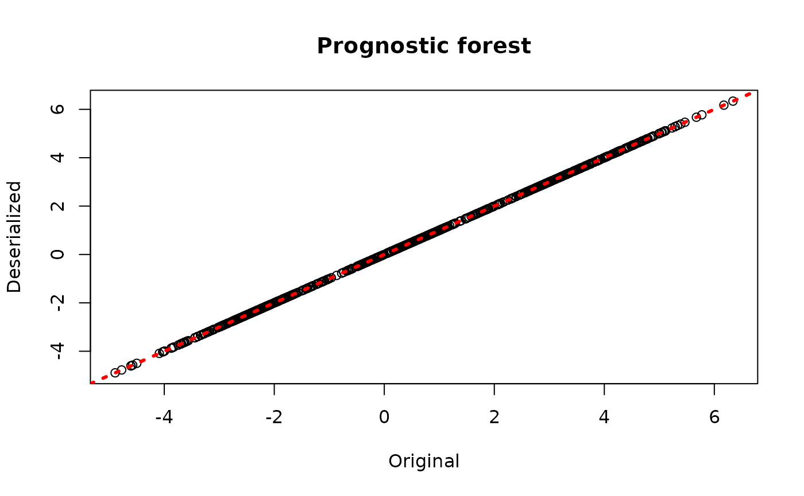
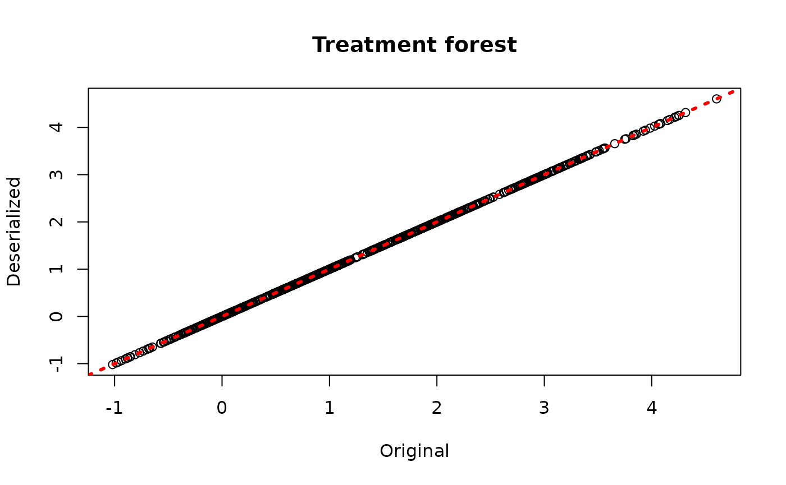
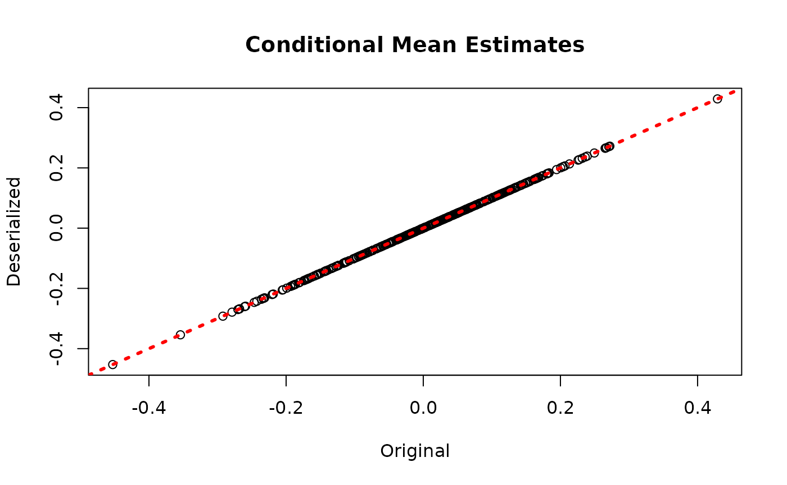
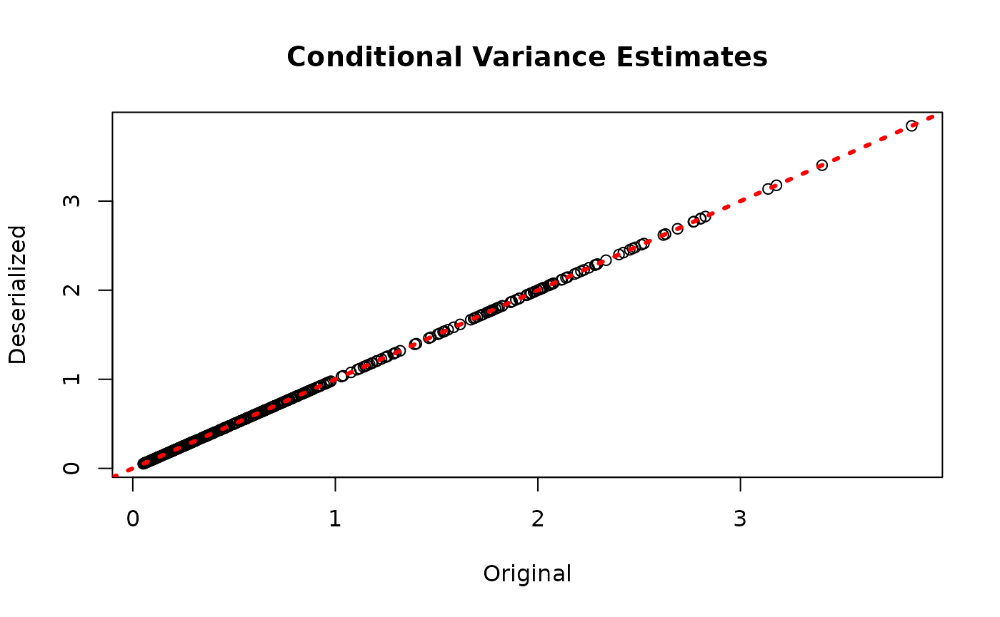

Model Serialization in StochTree
ModelSerialization.RmdThis vignette demonstrates how to serialize ensemble models to JSON files and deserialize back to an R session, where the forests and other parameters can be used for prediction and further analysis.
We also define several simple functions that configure the data generating processes used in this vignette.
g <- function(x) {ifelse(x[,5]==1,2,ifelse(x[,5]==2,-1,-4))}
mu1 <- function(x) {1+g(x)+x[,1]*x[,3]}
mu2 <- function(x) {1+g(x)+6*abs(x[,3]-1)}
tau1 <- function(x) {rep(3,nrow(x))}
tau2 <- function(x) {1+2*x[,2]*x[,4]}Demo 1: Bayesian Causal Forest (BCF)
BCF models are initially sampled and constructed using the
bcf() function. Here we show how to save and reload models
from JSON files on disk.
Model Building
Draw from a modified version of the data generating process defined in Hahn, Murray, and Carvalho (2020).
# Generate synthetic data
n <- 1000
snr <- 2
x1 <- rnorm(n)
x2 <- rnorm(n)
x3 <- rnorm(n)
x4 <- as.numeric(rbinom(n,1,0.5))
x5 <- as.numeric(sample(1:3,n,replace=TRUE))
X <- cbind(x1,x2,x3,x4,x5)
p <- ncol(X)
mu_x <- mu1(X)
tau_x <- tau2(X)
pi_x <- 0.8*pnorm((3*mu_x/sd(mu_x)) - 0.5*X[,1]) + 0.05 + runif(n)/10
Z <- rbinom(n,1,pi_x)
E_XZ <- mu_x + Z*tau_x
group_ids <- rep(c(1,2), n %/% 2)
rfx_coefs <- matrix(c(-1, -1, 1, 1), nrow=2, byrow=TRUE)
rfx_basis <- cbind(1, runif(n, -1, 1))
rfx_term <- rowSums(rfx_coefs[group_ids,] * rfx_basis)
y <- E_XZ + rfx_term + rnorm(n, 0, 1)*(sd(E_XZ)/snr)
X <- as.data.frame(X)
X$x4 <- factor(X$x4, ordered = TRUE)
X$x5 <- factor(X$x5, ordered = TRUE)
# Split data into test and train sets
test_set_pct <- 0.2
n_test <- round(test_set_pct*n)
n_train <- n - n_test
test_inds <- sort(sample(1:n, n_test, replace = FALSE))
train_inds <- (1:n)[!((1:n) %in% test_inds)]
X_test <- X[test_inds,]
X_train <- X[train_inds,]
pi_test <- pi_x[test_inds]
pi_train <- pi_x[train_inds]
Z_test <- Z[test_inds]
Z_train <- Z[train_inds]
y_test <- y[test_inds]
y_train <- y[train_inds]
mu_test <- mu_x[test_inds]
mu_train <- mu_x[train_inds]
tau_test <- tau_x[test_inds]
tau_train <- tau_x[train_inds]
group_ids_test <- group_ids[test_inds]
group_ids_train <- group_ids[train_inds]
rfx_basis_test <- rfx_basis[test_inds,]
rfx_basis_train <- rfx_basis[train_inds,]
rfx_term_test <- rfx_term[test_inds]
rfx_term_train <- rfx_term[train_inds]Sample a BCF model.
num_gfr <- 10
num_burnin <- 0
num_mcmc <- 100
num_samples <- num_gfr + num_burnin + num_mcmc
bcf_params <- list(sample_sigma_leaf_mu = F, sample_sigma_leaf_tau = F)
bcf_model <- bcf(
X_train = X_train, Z_train = Z_train, y_train = y_train, pi_train = pi_train,
group_ids_train = group_ids_train, rfx_basis_train = rfx_basis_train,
X_test = X_test, Z_test = Z_test, pi_test = pi_test, group_ids_test = group_ids_test,
rfx_basis_test = rfx_basis_test,
num_gfr = num_gfr, num_burnin = num_burnin, num_mcmc = num_mcmc,
params = bcf_params
)Deserialization
Reload the BCF model from disk.
bcf_model_reload <- createBCFModelFromJsonFile("bcf.json")Check that the predictions align with those of the original model.
bcf_preds_reload <- predict(bcf_model_reload, X_train, Z_train, pi_train, group_ids_train, rfx_basis_train)
plot(rowMeans(bcf_model$mu_hat_train), rowMeans(bcf_preds_reload$mu_hat),
xlab = "Original", ylab = "Deserialized", main = "Prognostic forest")
abline(0,1,col="red",lwd=3,lty=3)
plot(rowMeans(bcf_model$tau_hat_train), rowMeans(bcf_preds_reload$tau_hat),
xlab = "Original", ylab = "Deserialized", main = "Treatment forest")
abline(0,1,col="red",lwd=3,lty=3)
plot(rowMeans(bcf_model$y_hat_train), rowMeans(bcf_preds_reload$y_hat),
xlab = "Original", ylab = "Deserialized", main = "Overall outcome")
abline(0,1,col="red",lwd=3,lty=3)
Demo 2: BART
BART models are initially sampled and constructed using the
bart() function. Here we show how to save and reload models
from JSON files on disk.
Model Building
Draw from a relatively straightforward heteroskedastic supervised learning DGP.
# Generate the data
n <- 500
p_x <- 10
X <- matrix(runif(n*p_x), ncol = p_x)
f_XW <- 0
s_XW <- (
((0 <= X[,1]) & (0.25 > X[,1])) * (0.5*X[,3]) +
((0.25 <= X[,1]) & (0.5 > X[,1])) * (1*X[,3]) +
((0.5 <= X[,1]) & (0.75 > X[,1])) * (2*X[,3]) +
((0.75 <= X[,1]) & (1 > X[,1])) * (3*X[,3])
)
y <- f_XW + rnorm(n, 0, 1)*s_XW
# Split data into test and train sets
test_set_pct <- 0.2
n_test <- round(test_set_pct*n)
n_train <- n - n_test
test_inds <- sort(sample(1:n, n_test, replace = FALSE))
train_inds <- (1:n)[!((1:n) %in% test_inds)]
X_test <- as.data.frame(X[test_inds,])
X_train <- as.data.frame(X[train_inds,])
W_test <- NULL
W_train <- NULL
y_test <- y[test_inds]
y_train <- y[train_inds]
f_x_test <- f_XW[test_inds]
f_x_train <- f_XW[train_inds]
s_x_test <- s_XW[test_inds]
s_x_train <- s_XW[train_inds]Sample a BART model.
num_gfr <- 10
num_burnin <- 0
num_mcmc <- 100
num_samples <- num_gfr + num_burnin + num_mcmc
bart_params <- list(num_trees_mean = 100, num_trees_variance = 50,
alpha_mean = 0.95, beta_mean = 2, min_samples_leaf_mean = 5,
alpha_variance = 0.95, beta_variance = 1.25,
min_samples_leaf_variance = 1,
sample_sigma_global = F, sample_sigma_leaf = F)
bart_model <- stochtree::bart(
X_train = X_train, y_train = y_train, X_test = X_test,
num_gfr = num_gfr, num_burnin = num_burnin, num_mcmc = num_mcmc,
params = bart_params
)Deserialization
Reload the BART model from disk.
bart_model_reload <- createBARTModelFromJsonFile("bart.json")Check that the predictions align with those of the original model.
bart_preds_reload <- predict(bart_model_reload, X_train)
plot(rowMeans(bart_model$y_hat_train), rowMeans(bart_preds_reload$y_hat),
xlab = "Original", ylab = "Deserialized", main = "Conditional Mean Estimates")
abline(0,1,col="red",lwd=3,lty=3)
plot(rowMeans(bart_model$sigma_x_hat_train), rowMeans(bart_preds_reload$variance_forest_predictions),
xlab = "Original", ylab = "Deserialized", main = "Conditional Variance Estimates")
abline(0,1,col="red",lwd=3,lty=3)